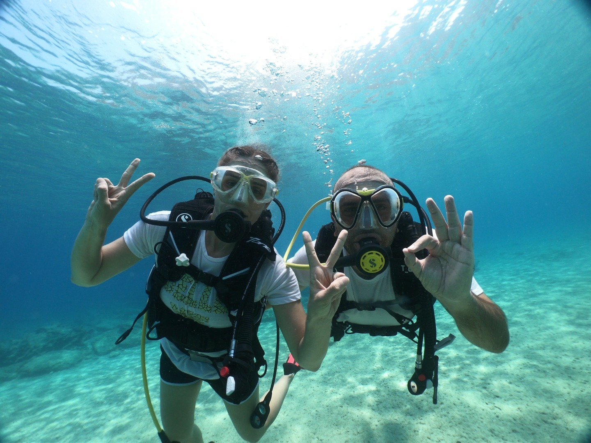
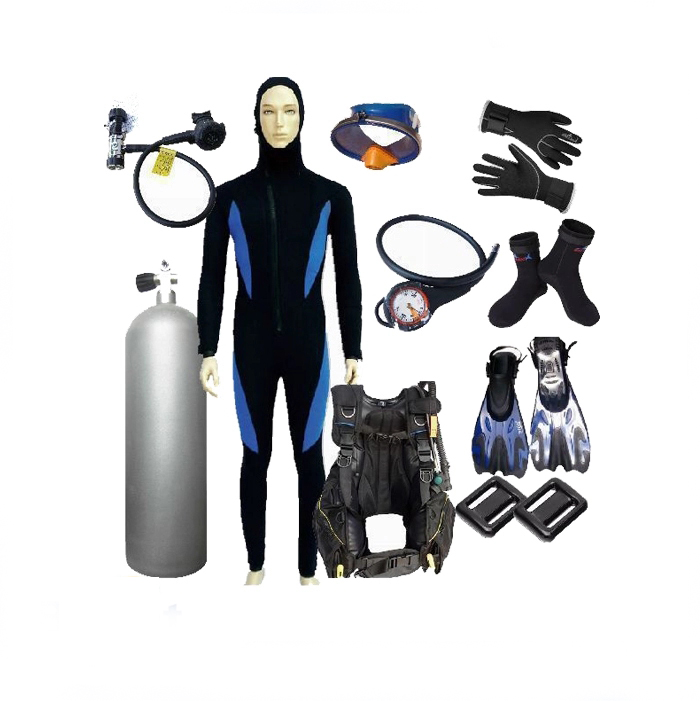
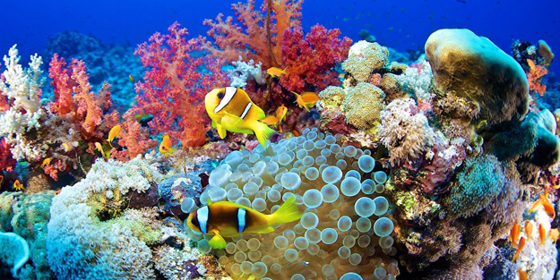
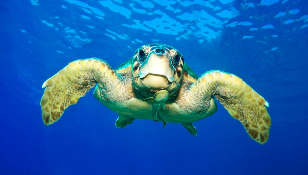

Dalış Güvenliği: Önemli İpuçları
Su altı dalışı, heyecan verici ve unutulmaz bir deneyim sunarken, aynı zamanda doğru güvenlik önlemlerinin alındığı bir spor dalıdır. Su altında bulunduğunuz ortam farklılık gösterdiği için, güvenlik ilkelerine uygun hareket etmek hayati önem taşır. Bu blog yazısında, dalış güvenliğiyle ilgili bazı maddelere odaklanacağız, böylece su altında güvenli ve sorunsuz bir dalış deneyimi yaşayabilirsiniz.
- Dalış Öncesi Hazırlık
- Dalış Ekipman Seçimi
- Düşük Riskli Dalış Noktalarını Seçmek
- İletişim ve Dalış Partneri
- Panik Durumlarına Hazırlıklı Olma
Su altı dalışı yaparken, güvenliğinizi en üst düzeyde tutmak için bu önemli ipuçlarını ve ilkeleri aklınızda bulundurun. Her zaman eğitimli ve deneyimli dalış uzmanlarının rehberliğinde dalmanızı öneririz. Su altında güvenli bir şekilde keşifler yapmak için doğru ekipmana, planlamaya ve iyi bir dalış disiplinine sahip olun. Unutmayın, güvenlik her zaman öncelik olmalı ve su altı dünyasının tadını çıkarırken doğayı koruma sorumluluğunu unutmayın.

Dalış Ekipmanı: Doğru Seçim, Güvenli Macera
Su altı dalışı için doğru ekipman seçimi, güvenli ve keyifli bir deneyim için hayati önem taşır. Bu blog yazısında, dalış maskeleri, paletler, dalış tüpleri ve daha fazlası gibi temel dalış ekipmanlarını ele alacağız. Her bir ekipmanın işlevini ve nasıl doğru bir şekilde seçileceğini öğrenecek, dalış ekipmanınızı nasıl bakımlı tutabileceğinizi ve uzun ömürlü kullanabileceğinizi keşfedeceksiniz.
Peki bu ekipmanların seçiminde nelere dikkat edilmelidir ? Gelin beraber bakalım:
Dalış Maskesi: Bir dalış maskesi, gözlerinizi ve burnunuzu suyun dışında tutmanın yanı sıra net bir görüş sağlar. Bir dalış maskesi seçerken, yüz şeklinize uygun olmasına dikkat edin. Sızdırmazlık ve rahatlık sağlamalıdır. Ayrıca, camının kaliteli ve çizilmeye dayanıklı olduğundan emin olun.
Paletler: Paletler, su altında ilerlemeyi kolaylaştırır ve enerji tasarrufu sağlar. Yüzme stiline ve tercihlerinize uygun paletleri seçin. Yumuşak ve esnek malzemelerden yapılan paletler genellikle daha rahattır. Ayak numaranıza uygun olan paletleri seçtiğinizden emin olun.
Dalış Tüpleri: Dalış tüpleri, su altında nefes almanızı sağlayan önemli bir ekipmandır. Bir dalış tüpü seçerken, boyut, ağırlık, malzeme ve solunum sistemi uyumluluğunu göz önünde bulundurun. Dalış tüpünüzü düzenli olarak kontrol edin ve bakımını yapın. Aşınmış veya hasarlı bir tüpü kullanmaktan kaçının.
Dalış Elbiseleri: Dalış elbiseleri, vücudunuzu su altında sıcak tutar ve korur. Su altında vücut ısısını koruyan uygun kalınlıkta bir dalış elbisesi seçin. Kıyafetin boyutu ve uyumu da önemlidir, sıkıştırmamalı veya sarkmamalıdır. Ayrıca, cildinizi güneşin zararlı etkilerinden koruyan UV koruma özellikli bir dalış elbisesi tercih edin.
Diğer Aksesuarlar: Şişme cihazı, bıçak, pusula ve deniz canlılarına karşı koruma ekipmanları gibi diğer dalış aksesuarları da önemlidir. Bu aksesuarları doğru bir şekilde seçin ve kullanmayı öğrenin. Şişme cihazınızın çalışır durumda olduğundan emin olun ve bıçağınızın keskin olduğunu kontrol


En İyi Dalış Noktaları: Sualtında Keşfedilecek Yerler
Kıyafetimize göre aksesuar seçimi nasıl olmalı, kıyafetlerimizin tam olmasını sağlayan en önemli etken kullandığımız aksesuarlardır. Kadınların kullandığı ve kullanmaktan vazgeçemediği aksesuarları seçerken bazı zamanlarımız da zorluk yaşayabiliyoruz. En önemlisi de bu aksesuarı kullanacağımız gün bizim için çok önemli olduğunda..
- Kaş-Antalya
- Bodrum-Muğla
- Fethiye-Muğla
- Datça-Muğla
- Bozcaada-Çanakkale
Akdeniz'in en popüler dalış bölgelerinden biri olan Kaş, berrak suları ve renkli mercan resifleriyle ünlüdür. Burada dalış yaparken deniz kaplumbağaları, vatozlar, süngerler ve çeşitli balık türlerini gözlemleyebilirsiniz. Ayrıca, batıklarla dolu bir dalış deneyimi de yaşayabilirsiniz.
Türkiye'nin turistik bir beldesi olmasının yanı sıra dalış severler için de bir cennettir. Sualtı mağaraları, kayalık resifleri ve renkli balıklarıyla ünlüdür. Burada dalış yaparken orfoz balıkları, ahtapotlar, deniz kestaneleri gibi canlıları gözlemleme şansınız olacaktır.
Eşsiz doğal güzelliklere sahip Fethiye, dalış yapmak isteyenler için harika bir seçenektir. Özellikle Ölüdeniz ve Gemiler Adası çevresindeki dalış noktaları, zengin deniz canlıları, resifler ve batıklarla doludur. Burada deniz atları, deniz tavşanları, deniz anemonları ve daha birçok canlıyı gözlemleyebilirsiniz.
Ege Denizi'nde yer alan Datça, temiz suları ve çeşitli dalış noktalarıyla dikkat çeker. Bu bölgede dalış yaparken sünger resifleri, kayalık yamaçlar ve renkli balıklarla karşılaşabilirsiniz. Datça'nın açıklarında bulunan Kocadağ Adası da dalış severler için popüler bir noktadır.
Ege Denizi'nde yer alan Bozcaada, dalış severler için sakin ve huzurlu bir ortam sunar. Burada dalış yaparken çeşitli balık türleri, süngerler ve mercanlarla dolu resiflerle karşılaşabilirsiniz. Ayrıca, Bozcaada'nın batısında yer alan batık gemiler de keşfedilmeyi bekleyen ilgi çekici noktalardır.
Türkiye'nin bu eşsiz dalış noktalarında su altı dünyasının tadını çıkarabilir ve unutulmaz bir dalış deneyimi yaşayabilirsiniz. Ancak, her zaman dalış yapmadan önce güvenlik ekipmanlarınızı kontrol edin ve sertifikalı bir dalış eğitmeni eşliğinde dalış yapmayı unutmayın.